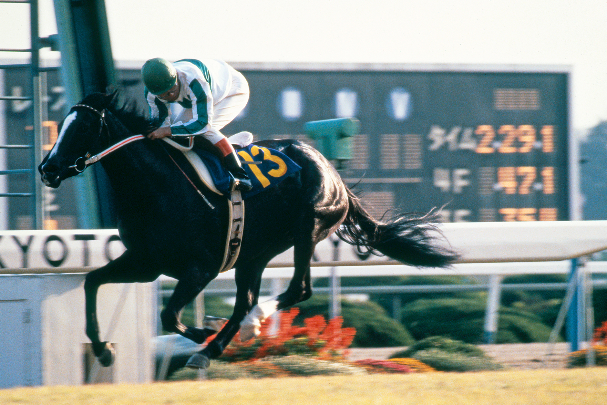

「初代・牝馬三冠」魔性の末脚を持つ女王
メジロラモーヌ

1986年、日本競馬史上初めて「牝馬三冠」という概念を現実に知らしめた不世出の歌姫。トライアルレースを含め、牝馬三冠路線のすべてのレースを勝ち進んでの「完全三冠」は、後の名牝たちをもってしても容易には成し得ない圧倒的な記録です。
基本データ
- 主な鞍上： 河内洋
- 獲得賞金： 約3億1000万円
- 通算成績： 12戦9勝
- 脚質：差し
-
血統（父母）：
- モガミ
- メジロヒリュウ
能力パラメータ
※独自解析による競走能力アーカイブ
全戦績
| 年 | レース名 | 着順 | 着差 | 鞍上 |
|---|---|---|---|---|
| 1985 | 3歳新馬 | 1着 | 2 1/2馬身 | 本田優 |
| 1986 | クイーンC | 1着 | ハナ | 河内洋 |
| 1986 | 4歳牝馬特別(西) | 1着 | 1 3/4馬身 | 河内洋 |
| 1986 | 桜花賞 | 1着 | 1 3/4馬身 | 河内洋 |
| 1986 | 4歳牝馬特別(東) | 1着 | クビ | 河内洋 |
| 1986 | オークス | 1着 | 2 1/2馬身 | 河内洋 |
| 1986 | ローズS | 1着 | 1 1/4馬身 | 河内洋 |
| 1986 | エリザベス女王杯 | 1着 | 1/2馬身 | 河内洋 |
| 1986 | 有馬記念 | 9着 | - | 河内洋 |
主な産駒（子供たち）
- メジロリベーラ
- メジロルバート
※名前をクリックすると詳細ページへ移動できます
伝説の瞬間：完全無欠の三冠ロード
ラモーヌの凄さは、三冠本番（桜花賞・オークス・エリザベス女王杯）だけでなく、そのステップレースまですべて1着で駆け抜けた点にあります。常に「勝って当たり前」のプレッシャーの中、ライバルたちを寄せ付けなかったその姿は、メジロ軍団の最高傑作と呼ぶにふさわしいものでした。